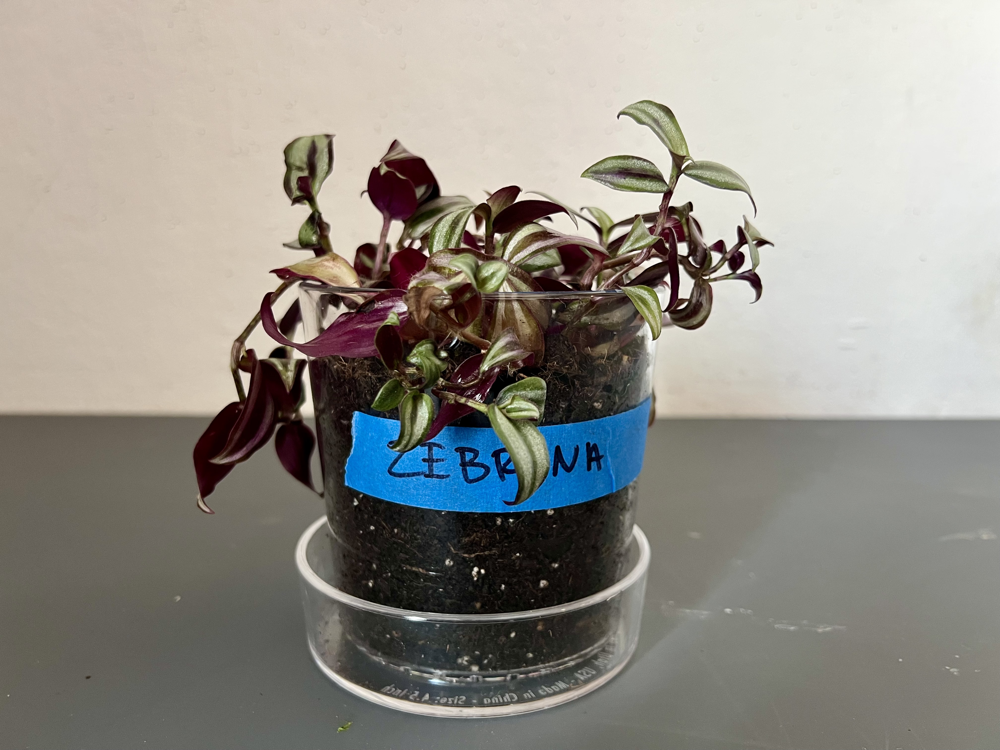
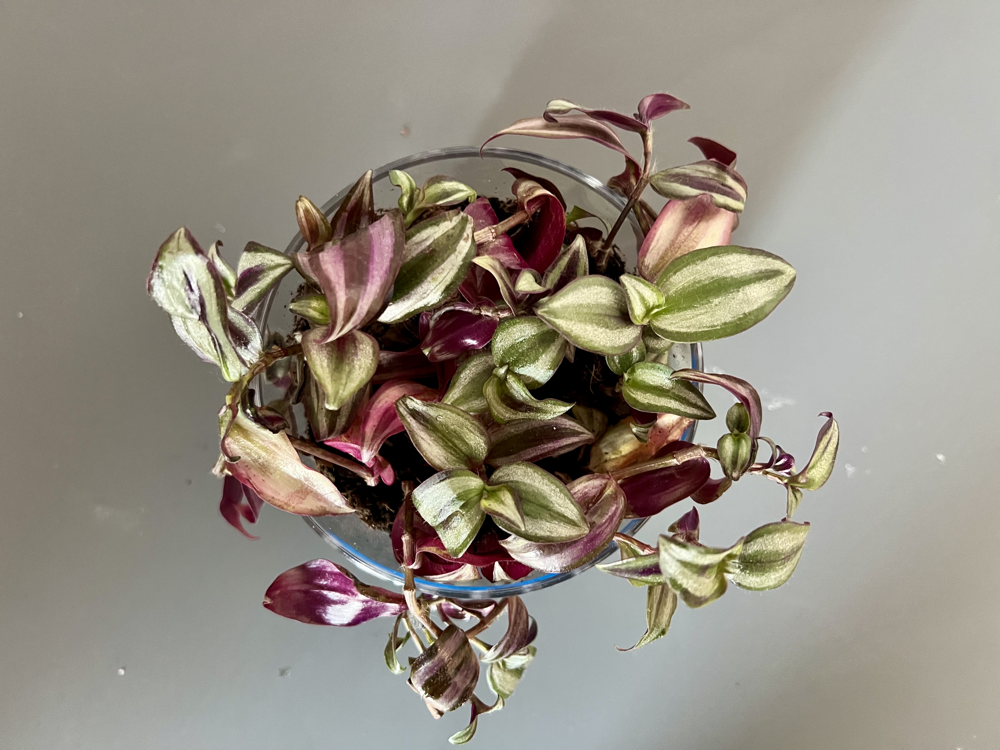
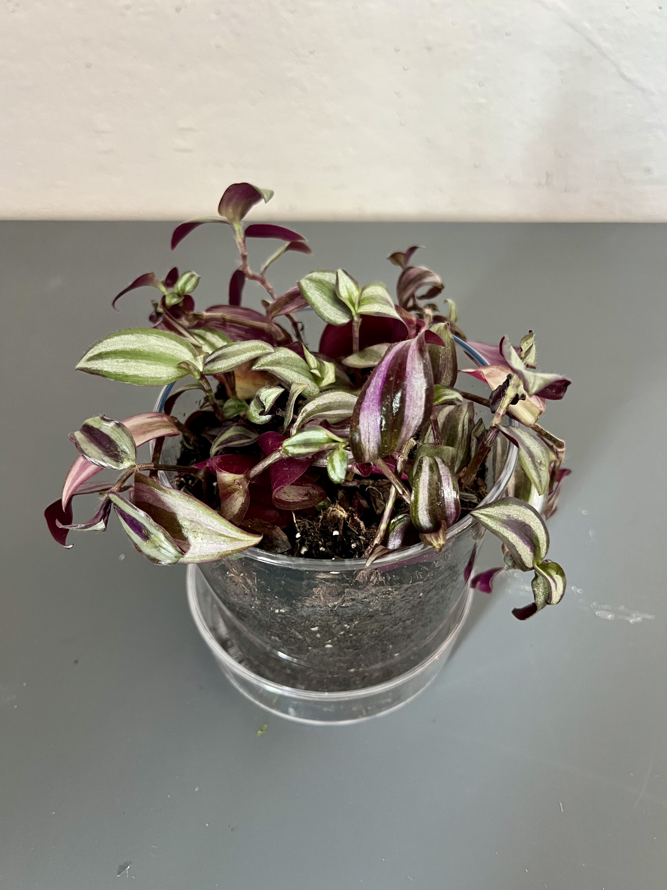
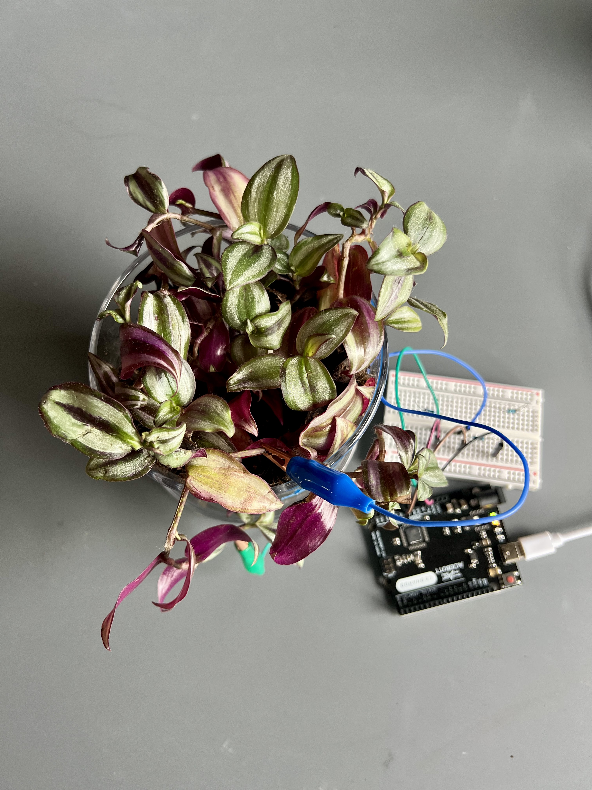
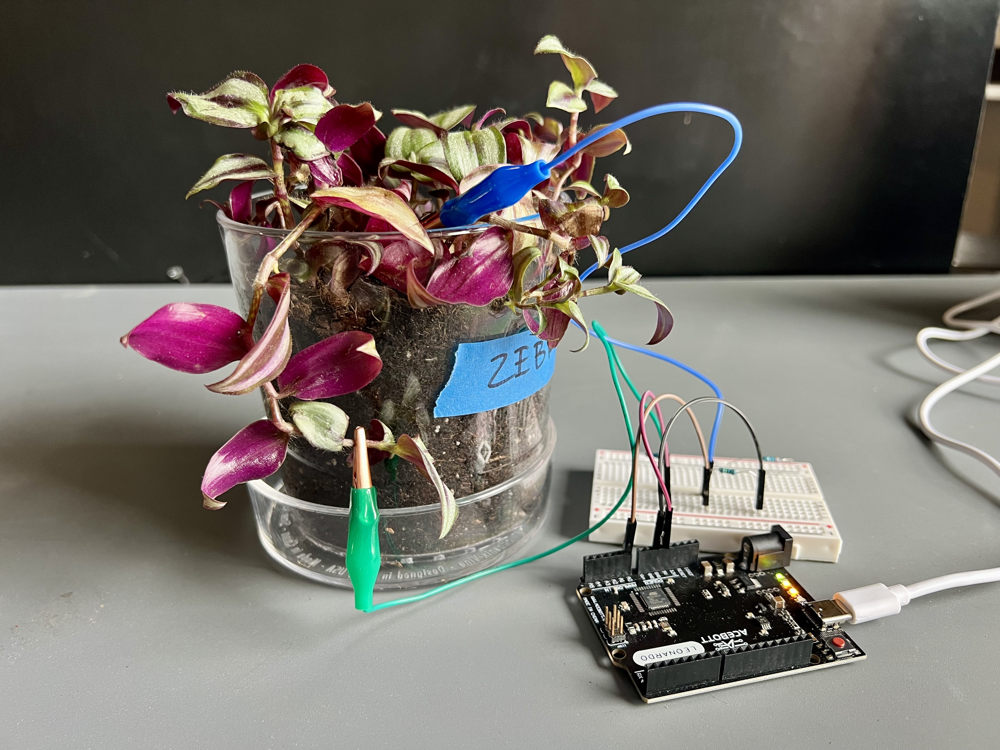
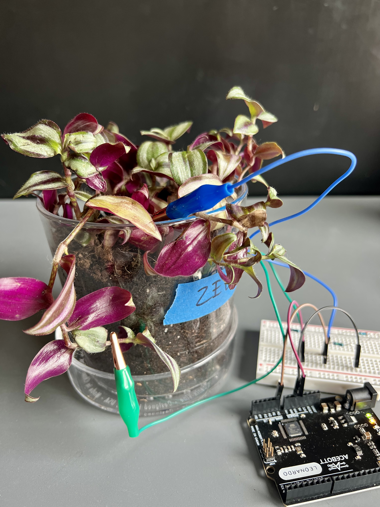
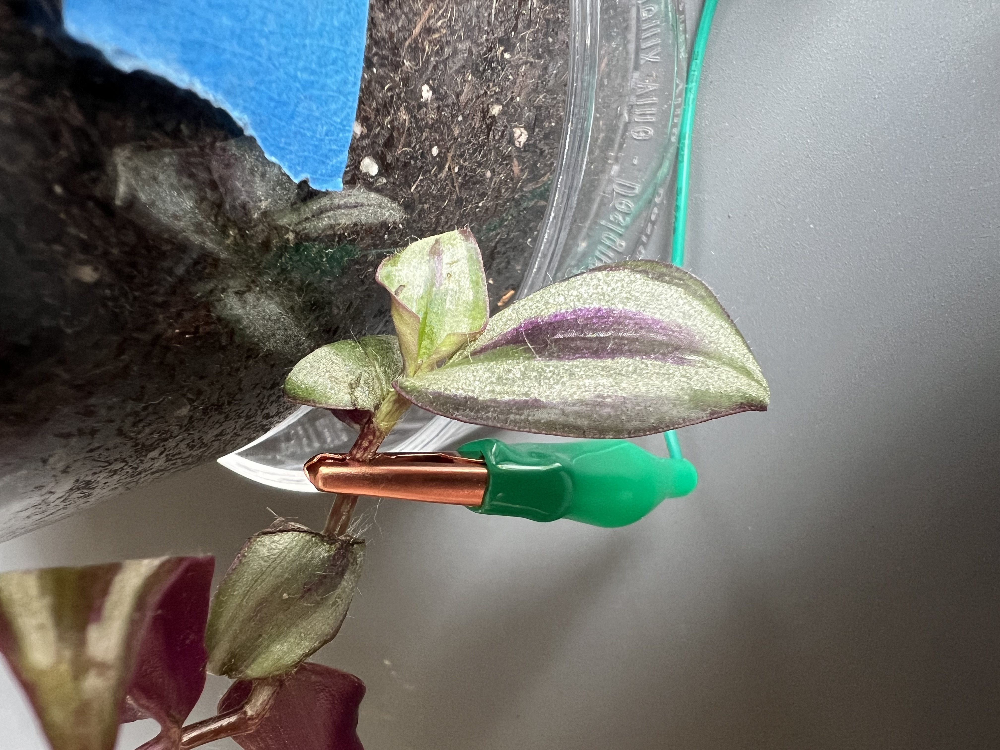
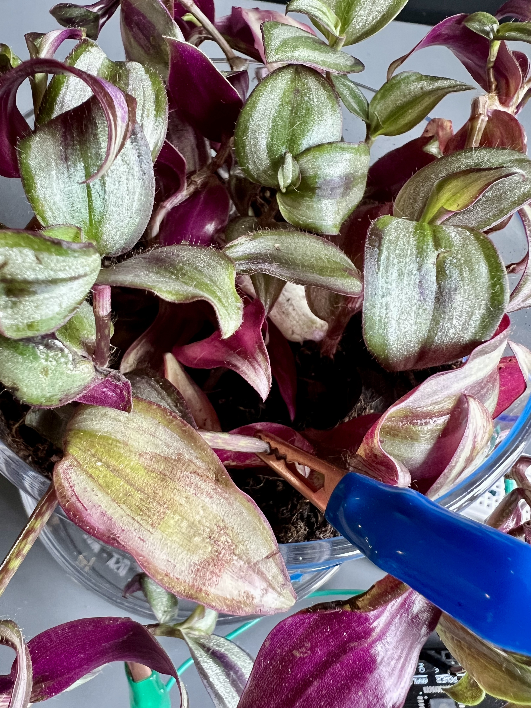
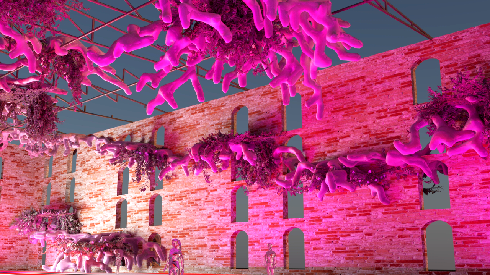
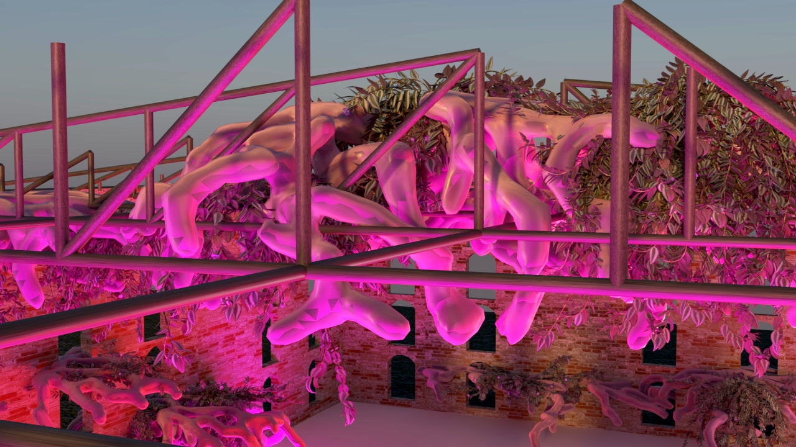

Form
Failure
Tradescantia zebrina is one of the most aggressive vegetative propagators in the plant kingdom. When stems are damaged or die, meristematic cells at each node reactivate in response to wounding signals. Dead tissue becomes the structural scaffold from which new organisms emerge. This experiment measures the electrical conductivity differential between dead tissue and new growth, making visible the invisible process by which the plant reads damage as an instruction to regenerate.
Biological + Architectural Logic
In plant logic, there is no category for error. What humans perceive as failure — a severed stem, a dying cell, a rupture in the vascular system — is immediately recoded as chemical information. The plant doesn't distinguish between damage and signal. They are the same event. So error, in plant logic, is simply information that hasn't been acted on yet.
Through morphogenetic design, wound response can become a form generator. The plant doesn't need the parent to survive — each fragment is a regenerative unit. Form is generated by resource failure. "Error" becomes a new opportunity for regeneration.
Abstract
Context
In a world of depleted resources and the decay of the built environment, how can we grow from nothing? As climate displacement accelerates, cities are increasingly defined not by construction but by abandonment. Entire districts are left behind as populations migrate — buildings deteriorate, infrastructure collapses, and the material and economic resources required for conventional reconstruction are no longer available. New construction depends on supply chains that are already strained by resource extraction limits, and as raw materials become scarcer and more costly, the gap between what decays and what can be rebuilt widens. The ruins accumulate faster than they can be replaced. Conventional architecture has no answer for this condition — it was designed for growth, not for working within collapse.
But biological systems operate under a different logic entirely: damage is not an endpoint, it is a signal. Tradescantia zebrina doesn't survive despite decay — it propagates because of it. Wound response triggers cellular reactivation; dead tissue becomes scaffold; each fragment carries the full capacity to regenerate without its parent. If this logic could be embedded into architectural systems, failure would no longer demand new material input — it would initiate growth from what already exists. This experiment asks whether we can sense and measure that biological process electrically, and whether the data it produces can drive a generative algorithm that treats decay as the primary input for new form.
Experimentation
Experiment
One electrode is placed at the dead end of the stem — desiccated tissue, minimal ionic activity, electrically inert. The second electrode is placed at the opposite end where new growth is actively forming — differentiated cells, high moisture content, responsive to environment. The circuit measures the total electrical resistance of the stem segment between these two points, capturing the combined ionic state of the full decay-to-regeneration gradient in a single continuous reading.
The conductivity differential is not incidental to regeneration — it is the process made legible. The sensor does not intervene. It witnesses.
As the dead end continues to desiccate over time, resistance across the stem increases and conductance declines. The living end introduces moment-to-moment oscillation — responsive to temperature, humidity, and touch — riding on top of the slow directional drift. The two signals are superimposed in a single channel: long-term decay and short-term biological activity, inseparable and simultaneous.
| Electrode | State | Reading |
|---|---|---|
| Electrode A — Dead End | Low · Stable | Desiccated stem. Minimal ionic activity. Electrically inert — the scaffold. |
| Electrode B — New Growth | High · Responsive | Differentiated cells. High moisture content. Responsive to touch and environment — the emergence. |
Methodology
Electrical Conductivity
16-bit · 3-channel differential
Analog pin A0
~10 Hz continuous logging
Electrode placement protocol: Ag/AgCl electrodes wrapped around the stem at each end rather than pierced through the tissue. Piercing triggers a wound response and corrupts the baseline reading. Plant staged vertically against a wall so the arrangement reads as a building section — dead stem at the top, new growth emerging at the base.

Documentation








During the active growth phase of the experiment, the DLA script was run in live connection with the Arduino Leonardo via SuperSerial, allowing the Tradescantia zebrina conductance readings to directly modulate the geometry parameters in real time. The raw electrical signal from the plant — measured across the stem between dead tissue and new growth — was parsed, remapped, and fed into the amplitude parameter of the aggregation algorithm, so that fluctuations in the plant's ionic activity produced corresponding changes in the density and character of the generated geometry. The sensor does not simulate growth — it witnesses a biological process and translates it into architectural form. What the algorithm produces is not a representation of the plant but a direct consequence of its electrical state at that moment.
Data
Readings
Cycle
Range
Growth Trigger
Signal
The first 24 hours are recorded data — the electrical conductivity of the stem between dead tissue and new growth, captured continuously from 18:03 on April 17. The signal begins high (~0.41 µS), reflecting active ionic transport in living tissue, then declines to a trough (~0.18 µS) as the wound response progresses and resistance increases across the dying stem section. The second 24 hours are a modeled extrapolation: the recorded arc mirrored symmetrically to produce a full wound-recovery cycle. In Tradescantia, the trough of the wound signal is the biological trigger for meristematic reactivation — the point at which dead tissue becomes scaffold and new growth begins to differentiate. The recovery phase models the conductance climbing back as new cellular activity restores ionic flow through the regenerating tissue.
Average
The smoothed average reveals the cycle envelope clearly: a slow descent into the wound trough followed by a symmetric recovery. In the generative model, high conductance maps to high growth density — the DLA cluster is dense and actively expanding. Low conductance maps to the decay trigger — the point at which building geometry begins to dissolve and new growth origins are seeded. The trough is not the end state. It is the instruction.
Thesis Context
The points of structural failure on the warehouse — exposed truss junctions, open window keystones, damaged roof edges — become the seed points for the DLA growth algorithm. Decay on the site is growth in the model. This directly mirrors Tradescantia's wound response logic: the plant does not grow despite damage, it grows from it. The most failed point is the most fertile one


Buildings are no longer demolished and replaced — they are read for their remaining regenerative capacity. Structural failure is not cleared; it is an incubator for growth.
According to plant logic, error is not a problem to be corrected — it is an opportunity for new life. By harnessing the biological framework of cell activation and differentiation, decay becomes the trigger for regeneration rather than the signal for demolition. Damaged material is not waste; it is scaffold. The building's failures become its growth nodes, repurposed as the origin points from which new structure differentiates and emerges.
What human perception reads as error, loss, or irreversible deterioration, plant logic reads as signal. The architecture that results is accretive rather than additive: growing from what already exists. If architectural systems could operate under this same biological framework, the ruins of one building would not mark the end of occupation — they would carry within them the precise conditions needed for the next one to grow.